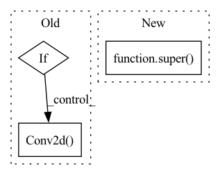

Pattern ID :14241
Before Change
)
// Managing 2d convolutions
if self.conv2d:
if self.padding is not None:
self.padding = self.padding[0:-1]
// Initialization of the parameters
self.conv = nn.Conv2d(
self.in_channels,
self.out_channels,
tuple(self.kernel_size),
stride=tuple(self.stride),
padding=0,
dilation=tuple(self.dilation),
groups=self.groups,
bias=self.bias,
padding_mode=self.padding_mode,
)
// Managing initialization with an external model
// (useful for pre-training)
initialize_with(self)After Change
do_recovery=True,
initialize_from=None,
):
super() .__init__()
self.out_channels = out_channels
self.kernel_size = kernel_sizeIn pattern: SUPERPATTERN
Frequency: 3
Non-data size: 3
Instances Fragment ID: 47276747
Project Name: speechbrain/speechbrain
Commit Name: 0ff34ea8f75b108dc69542658d39b70118bf01ca
Time: 2020-03-31
Author: plantinga.peter@gmail.com
File Name: speechbrain/nnet/architectures.py
M Class Name: conv
N Class Name: conv
M Method Name: __init__(12)
N Method Name: __init__(7)
M Parent Class: nn.Module
N Parent Class: nn.Module
M File Name: speechbrain/nnet/architectures.py
N File Name: speechbrain/nnet/architectures.py
M Start Line: 458
M End Line: 611
N Start Line: 387
N End Line: 516
Before Change
self.bn3 = nn.BatchNorm2d(self.expansion*planes)
self.shortcut = nn.Sequential()
if stride != 1 or in_planes != self.expansion*planes:
self.shortcut = nn.Sequential(
nn.Conv2d( in_planes, self.expansion*planes, kernel_size=1, stride=stride, bias=False) ,
nn.BatchNorm2d(self.expansion*planes)
)
After Change
dilation: int = 1,
norm_layer: Optional[Callable[..., nn.Module]] = None,
) -> None:
super() .__init__()
if norm_layer is None:
norm_layer = nn.BatchNorm2d
width = int(planes * (base_width / 64.0)) * groups Fragment ID: 47276746
Project Name: decile-team/cords
Commit Name: 931f2dbbb853ea9beb25e72b69e473c0365e60ca
Time: 2023-02-04
Author: 61333497+krishnatejakk@users.noreply.github.com
File Name: cords/utils/models/resnet.py
M Class Name: Bottleneck
N Class Name: Bottleneck
M Method Name: __init__(9)
N Method Name: __init__(4)
M Parent Class: nn.Module
N Parent Class: nn.Module
M File Name: cords/utils/models/resnet.py
N File Name: cords/utils/models/resnet.py
M Start Line: 42
M End Line: 59
N Start Line: 121
N End Line: 144
Before Change
self.bn2 = nn.BatchNorm2d(planes)
self.shortcut = nn.Sequential()
if stride != 1 or in_planes != self.expansion*planes:
self.shortcut = nn.Sequential(
nn.Conv2d( in_planes, self.expansion*planes, kernel_size=1, stride=stride, bias=False) ,
nn.BatchNorm2d(self.expansion*planes)
)
After Change
dilation: int = 1,
norm_layer: Optional[Callable[..., nn.Module]] = None,
) -> None:
super() .__init__()
if norm_layer is None:
norm_layer = nn.BatchNorm2d
if groups != 1 or base_width != 64: Fragment ID: 47276748
Project Name: decile-team/cords
Commit Name: 931f2dbbb853ea9beb25e72b69e473c0365e60ca
Time: 2023-02-04
Author: 61333497+krishnatejakk@users.noreply.github.com
File Name: cords/utils/models/resnet.py
M Class Name: BasicBlock
N Class Name: BasicBlock
M Method Name: __init__(9)
N Method Name: __init__(4)
M Parent Class: nn.Module
N Parent Class: nn.Module
M File Name: cords/utils/models/resnet.py
N File Name: cords/utils/models/resnet.py
M Start Line: 17
M End Line: 31
N Start Line: 66
N End Line: 90